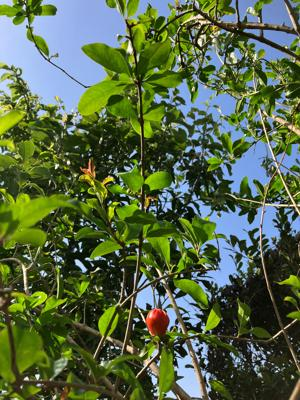
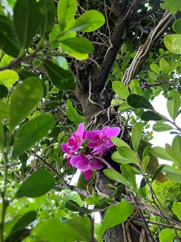

うるがいの話 ある日
最新: ルビ訳【うるがいの話 ある日】とは 一日だけのプログです
『うるがいの話』の最新一日だけのプログで、通信料が少なく経済的だ。カニの画像をクリックすると全ての日付が載る『うるがいの話』サイトを表示します
|
|
【うるがいの話】 うるがい(ｳﾙｶﾞｲ urugai)とは、『もずくがに』の名前でとても大きくなります。 |
|---|---|
|
|
【カミマヤーの話】 猫のことを方言でマヤーといいます。カミマヤー（kamimayaa）とは、神の猫のことです。 |
|
【たながぁの音楽】 たながぁ（ﾀﾅｶﾞｰ tanagaa）とは手長えびのことで、何種類かあり大きいのは車 エビぐらいになります。 |

|
【ぶながぁの話】 ぶながぁ(ﾌﾞﾅｶﾞｰ bunagaa)とは、赤い髪の毛、赤い身体、そして身長は１ｍ２０ｃｍ ぐらい、川の蟹を食べているの目撃された。場所は沖縄県国頭郡大宜味村のと ある村僕の隣近所に住んでいる爺さんから、聞いた話です。 |
|
|
【ギーマの話】 ギーマ(giima)とは、山原の里山に咲くスズランに似た、 花を付けます。実は食べられます、 気が付くと口の周りが紫になっています。 |
2023年04月17日 (月）ルビ訳
15:06
 
英語多読の素材として、講談社から出ているルビーブックスの本を数冊購入し
た。英語本文の下に、ところどころ、すこし薄い字で単語や表現を日本語訳し
たルビ（振り仮名）が振ってあるのが特徴だ。このスタイルを「ルビ訳」と呼
ぶらしい。
一ヶ月ほど前、ラジオのトーク番組で紹介された本、「アルジャーノンに花束
』を図書館から借りてと指示され、那覇市と県立の２か所に予約した。先に市
の本を手に入れヨメは読み始める（まだ、完読していない）る、その後、県立
図書館の本を・・・、あれまー、英語ジャン。ま、本のタイトルに（ＲＵＢＹ
ＢＯＯＫＳ）と載っているには気になったが、ついでなので、先月から読んで
いる。眠る前に読むことにしている、睡眠推進効果抜群である、今のところ一
日数ページか進まない。面白い本である・・・・・、昨日県立図書館の窓口で
一旦返却して、また貸出してもらう。いつまで、このやり方が続くのだろか。
１５時０２分 ビットコインの総資産 ￥１１、６５５（↓１０９）